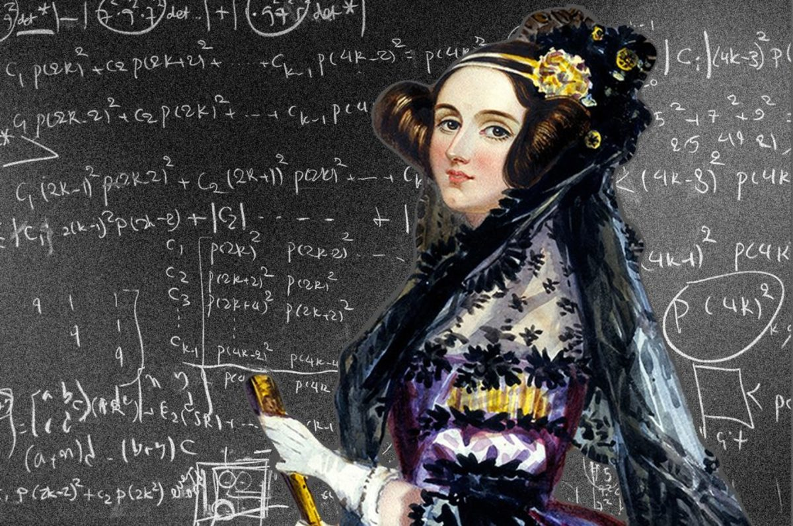
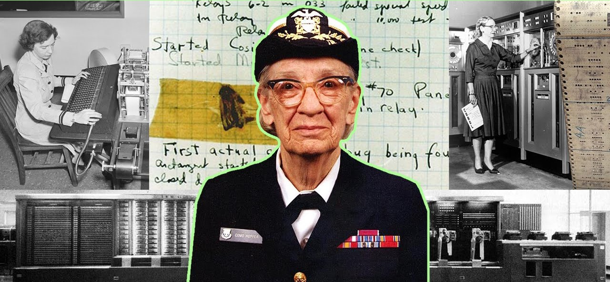

Математички и инженерки: как дела у женщин в точных науках?
По данным исследования Education at a Glance, в 2013 году в странах Организации экономического
сотрудничества и развития (OECD) женщины составили
58% выпускников бакалавриата (в России — почти 60%). Тенденция формируется еще в школе: 55%
получивших среднее образование в 2015 году в странах OECD (Россия в организацию не входит) — девочки. Кроме того, социологи выяснили, что женщины, поступившие в университет, с большей вероятностью,
чем мужчины, его окончат. Почти сравнялось
число мужчин и женщин, получающих степень PhD: в странах OECD — 52% и 48% соответственно, в России —
56% и 44%. Американские СМИ даже заговорили
о том, что мужчины в вузах стали меньшинством. Однако заявлять об окончательной образовательной
эмансипации женщин рано: в точных науках и технических специальностях женщин по-прежнему мало.
8 женщин учёных в IT

Ада Лавлейс
написала первую программу
и первый баг

Грейс Хоппер
придумала термин «баг»
и создала первый компилятор
Сестра Мэри Келлер
популяризировала информатику
среди женщин
Радия Перлман
создала протоколы IS-IS и STP
Кэтлин
Бут
создала первый язык
ассемблера
Маргарет Гамильтон
посадила на Луну
«Аполлон-11»
Кэтрин Джонсон
предложила использовать
компьютеры для расчётов в NASA
Карен
Спарк
разработала концепцию
поисковика